- ホーム
- 初診の方へ（矯正相談）・治療の流れ
初診の方へ（矯正相談）・
治療の流れ
矯正歯科治療にかかる期間や診療の流れは、患者さまの現在の歯並びや顎の形状、口腔内の状態、年齢などによって大きく異なります。とはいえ初めて矯正治療を受ける場合、治療の流れをある程度知っておかないと不安になってしまう方も多いかもしれません。
ここでは、川崎市・たまプラーザの矯正治療専門医院「くらしま矯正歯科」で矯正治療を行うときの一般的な流れについてご紹介します。治療手順のなかで不安な点や疑問点がありましたら、お気軽にご相談ください。
無料矯正相談受付中
- 初診料無料
- カウンセリング無料
- 表側矯正、裏側矯正、マウスピース矯正の最適なご提案
くらしま矯正歯科なら
ここまで無料でご利用いただけます。
ぜひご相談ください！
治療の流れ
-
1
ご予約
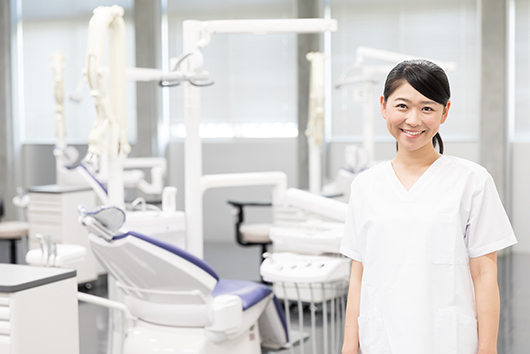
まずは、お電話もしくはWeb診療仮予約フォームからご予約をお取りください。当院の矯正治療は、基本的にご予約優先とさせていただいています。ただし、緊急時は状況に合わせてできるかぎり柔軟に対応しています。まずは遠慮なくご相談ください。
-
2
初診相談 30～60分
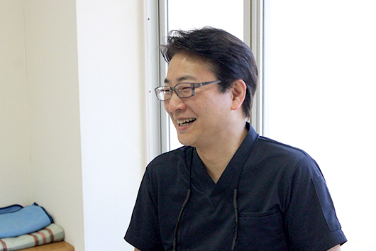
実際にご来院いただきましたら、歯並びのお悩みや治療に関するご要望をお聞きします。その後、お口の中を拝見する診察、顎関節はじめ口腔内環境の状態、全身の健康状態などを診査します。当院では、このときに総治療費のお見積もりをご提示します。
-
3
精密検査 60～90分
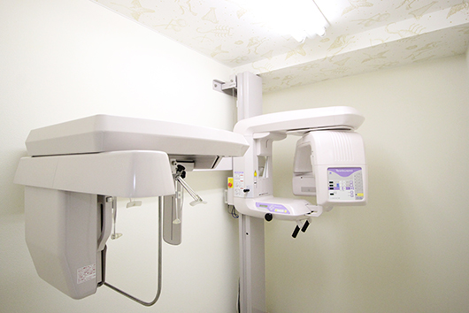
一人ひとりにあった治療法をご提案するためにも、精密検査を行い、診査ではわからないお口の細かい状態をチェックします。具体的には、歯型の採取、だ液検査、レントゲン撮影、顔貌・口腔内の写真撮影などを行います。痛みをともなう検査はないので、ご安心ください。
-
4
診察・インフォームドコンセント 30～60分
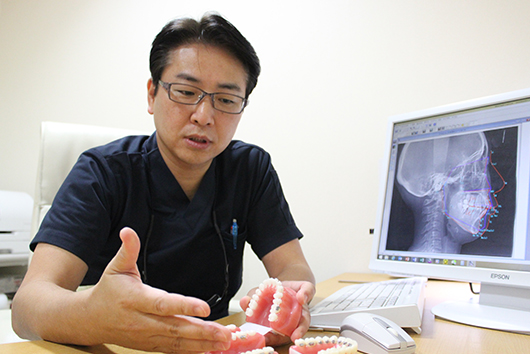
精密検査の結果や患者さまのご要望をふまえ、矯正歯科専門医として適切な治療計画を立案します。このとき、治療内容や治療期間、費用総額を患者さまにご提示・ご説明します。当院では、インフォームドコンセント（適切な説明を行ったうえで同意を得ること）を重視しており、患者さまにご理解いただいたうえで治療を開始していきます。わからないこと・気になることなどがありましたら、丁寧にご説明しますので、些細なことでも遠慮なくおたずねください。
-
5
デンタルケア指導 60分
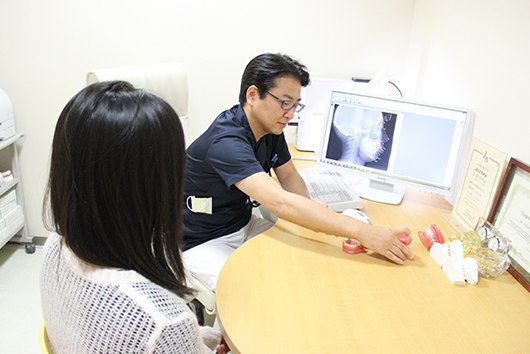
精密検査（だ液検査）の結果から、虫歯や歯周病のリスクを低減させるために患者さまごとの予防プログラムを立案いたします。予防ケアとしてのセルフケア（ブラッシング指導）・プロケア（PMTC＝歯のクリーニング）などを行います。
-
6
装置の装着 30～150分
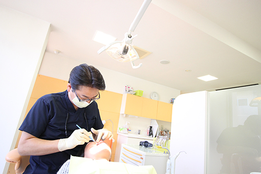
口腔内環境の健全性が確保できましたら、矯正装置を装着します。歯並びや装置の種類にもよりますが、上下の顎に同時に装着したいときも1回のご来院で処置が完了します。装置は1本1本の歯につけていきますが、このときに歯や歯ぐきを傷つけることはありません。
-
7
矯正治療期間 1.5～2.5年（患者さまごとに異なります）
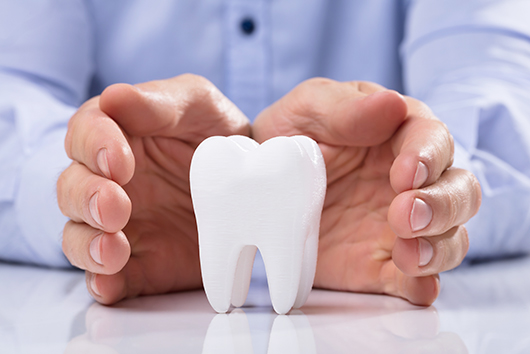
歯並びやお口の状態にもよりますが、通常1～2ヶ月ごとに通院していただき、歯の移動具合を確認いたします。このとき、装置の調整や口腔内のチェック、クリーニングなども同時に行います。1回あたりの所要時間は15～60分程度です。
-
8
装置の取り外し
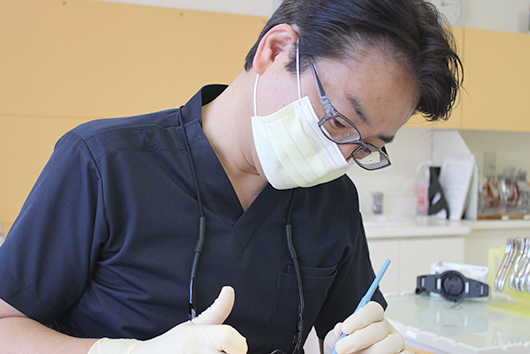
歯の移動が完了し、歯列が整ったことを確認できましたら、装置を取り外します。歯を動かしていく「動的治療」はこのタイミングで終了となります。
-
9
メンテナンス（保定）
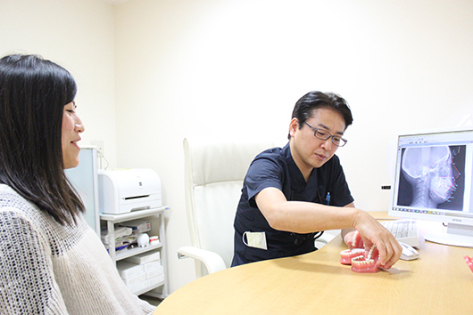
矯正装置を取り外したあとは、歯が元の位置に戻ろうとするため非常に不安定な状態です。整えた歯並びをキープするためにも、取り外し可能な装置を装着して、歯を正しい位置に維持する「保定（ほてい）」を行います。保定期間中は4ヶ月に1度程度通院いただき、歯列の確認や装置の調整、クリーニングを行います。保定は通常、歯の移動にかかった矯正治療期間と同じくらいの期間の実施が必要です。
-
10
治療完了
保定装置を外しても歯が安定して維持されることが確認できましたら、矯正治療は完了です。その後は、きれいにした口元をキープできるように予防や定期検診のご案内をいたします。定期的にご来院いただき、整えた歯並びや口腔内環境を健全な状態に保っていきましょう。
治療後のメンテナンス
川崎市・たまプラーザの矯正治療専門医院「くらしま矯正歯科」では、矯正治療だけではなく、保定期間も患者さまに寄り添い、きれいな歯並びに整うまで責任を持ってサポートしていきます。虫歯や歯周病などのお口のトラブルを「予防」するためのメンテナンスもご提案可能です。矯正を終えても継続して定期検診やクリーニングなどのプロケアをご利用いただくことで、より美しく健康な口元を維持できます。
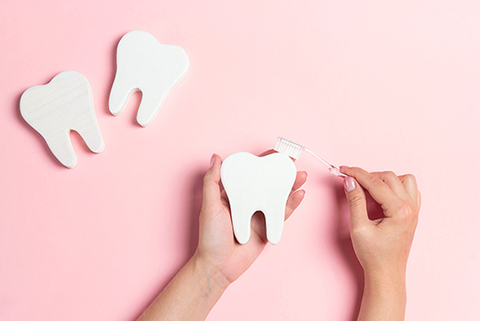
矯正後の定期健診
矯正治療が終了したあとも、当院では定期検診でお口の健康状態や治療後の歯列の確認などを行っています。歯並びが整ったあとも、毎日のブラッシングだけではお口の汚れを完全に落としきることはできません。矯正治療を行っても、虫歯になってしまえば本末転倒です。
もしお口に虫歯や歯周病などのトラブルの予兆がある場合は、定期的な検診を行っていれば早期治療が可能となり、トラブルの拡大を防げます。問題がない場合も予防処置を継続することで、矯正治療できれいに整えた歯を長く健康に維持できます。歯にトラブルが起きてから歯科医院へ駆け込むのではなく、定期検診で未然に防ぐことが大切です。
※親知らずが生えてきている方・残している方は、治療後最低年1回の受診をおすすめします
矯正治療後のケア
ブラッシング指導
毎日ご自宅で行うブラッシングは、お口の健康を維持するために欠かせないデンタルケアの基本です。当院では、矯正治療中も治療後もご自身で口腔ケアに努めていただけるよう、ブラッシング指導を行っています。歯を正しい位置に移動させた矯正治療後は、治療前と比べるとブラッシングをしやすくなっています。しかし、自己流の磨き方ではどうしても偏りや磨き残しが出てしまいますので、プロのブラッシングのチェックを受けて正しい磨き方を身につけていきましょう。
PMTC（Professional Mechanical Tooth Cleaning）
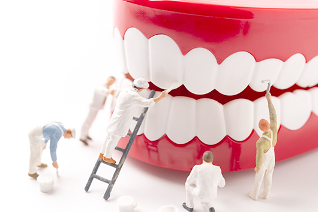
PMTCとは、歯科の専門家（歯科医や歯科衛生士）の手による、専門器具を用いたクリーニングのことです。普段ご自身で行っているブラッシングだけでは、どうしても磨き残しが出てしまうものです。PMTCでは、歯ブラシが届きにくい「歯の裏」や「歯と歯の間」「歯と歯ぐきの間」などに残ってしまった汚れを専用器具で徹底的に落とし、きれいに磨き上げます。プロによるクリーニングを受ければ、お口の中に存在する虫歯や歯周病の病原菌となる細菌類が減少し、矯正治療後も健全な口腔内を長く快適に維持できるようになります。
噛み合わせチェック
口腔内環境は常に変化しているため、歯並びや噛み合わせも日々変化していきます。矯正治療は、こうした歯の柔軟性を活かした治療ですから、治療後も歯並びや噛み合わせの変化には慎重に対処していくことが重要です。当院では、治療後のメンテナンス・予防処置として噛み合わせのチェックを行っています。歯列に悪影響となる変化があればすぐに最適な対応をご提案しますので、美しい口元をキープするためにも定期的にご来院ください。